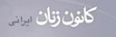

|
|

سایت کانون زنانی ایرانی بار دیگر هک شد
پنج شنبه4 مهر 1387
تغییر برای برابری- صبح امروز بازدید کنندگان سایت کانون زنان ایرانی به جای دیدن صفحه اول این سایت، با فیلم کوتاهی به زبان عربی و پیامی به زبان انگلیسی در زیر آن مواجه شدند . بر اساس این پیام گروهی که خود را هکرهای شیعه عنوان کرده اند مسئولیت این اقدام را برعهده گرفته اند.

ژیلا بنی یعقوب سردبیر سایت کانون زنان ایرانی در این رابطه به تغییربرای برابری می گوید: " ساعت نه و نیم صبح درپی تماس دوستانم در خارج از کشور باخبر شدم که ظاهرا سایت از ساعت 3 صبح به وقت ایران هک شده است. "
بنی یعقوب ضمن این که این عمل را مصداقی از توهین به آزادی بیان می داند در ادامه می گوید: " البته این برخورد برای ما چندان تعجب بر انگیز نبود. این بار سوم است که سایت کانون زنان ایرانی هک می شود و پیش از این چهار بار هم فیلتر شده است. مشخص نیست که واقعا چه کسانی و با چه هدفی سایت را هک می کنند، هر چند این بار از ظاهر امر چنین بر می آید که گروهی از هکرهای عرب این کار را انجام داده اند. به هر روی چنین اقدامی به هیچ وجه و با هیچ توجیهی پذیرفتنی نیست."
در آخرین بار که سایت هک شد یک سری از مطالب غیر اخلاقی و توهین آمیز نسبت به زنان در سایت درج شده بود و این بار می بینیم که هکر ها تحت عنوان هکرهای شیعه این اقدام را انجام داده اند.
بنی یعقوب همچنین از تلاش بخش فنی سایت برای حل این مشکل خبر داد.
گفتنی است سایت کانون زنان ایرانی یکی از سایت های فعال در جنبش زنان و کمپین یک میلیون امضا است که اخبار و مطالب مربوط به فعالیت های کمپین را پیگیرانه پوشش داده است.
در شناسنامه سایت کانون زنان ایرانی چنین آمده است: " نشريه اينترنتي كانون زنان ايراني ميكوشد هم از مطالبات زنان روشنفكر بگويد ،هم از خواسته هايزنان معمولي.هم "از زناندر متن "بگويد،هم از "زنان در حاشيه ".هم از "فعالان جنبش زنان "بگويد هم از "زنان در سايه ".اين نشريه هم مطالب تحليلي دارد هم خبر و گزارش در حوزه زنان و ميكوشد تريبوني باشد براي انعكاس فعاليتهاي كوچك و بزرگ زنان. ما با این باور که زنان در طبقات مختف جامعه بویژه زنان در طبقات پايين جامعه ازنابرابري و تبعيض. قانوني رنج زیادی می برند ، انعکاس مشکلات ناشی از این تبعیض ها را در باره زنان و مردان و همچنین فعالیت های جنبش زنان ایران را برای رفع این نابرابری ها در اولویت قرار داده ایم .تلاشی که در چند سال اخیر در کمپین یک میلیون امضا تبلور یافته است. ما علاوه بر انعکاس فعالیت های کمپین یک میلیون امضا ،خود نیز با جمع آوری امضا در مسیر این حرکت مدنی و برابری خواه مشارکت داریم.
ما با اين اعتقاد كه اغلب مواقع زنان درشهرهايي به جز پايتخت مورد غفلت قرار گرفتهاند، ميكوشيم كه نشريهمان محلي براي انعكاس فعاليتهاي زنان در همه ايران بويژه نقاط دور افتاده كشور باشد. ما براي دسترسي به اخبار فعاليتهاي زنان در سراسر ايران ازهمكاري داوطلبانه اعضاي تعدادي از تشكل هاي غيردولتي زنان در شهرهاي مختلف ايران ياري ميگيريم.
ما به صورت کاملا داوطلبانه کار می کنیم و از هیچ موسسه داخلی و خارجی کمک مالی دریافت نمی کنیم."